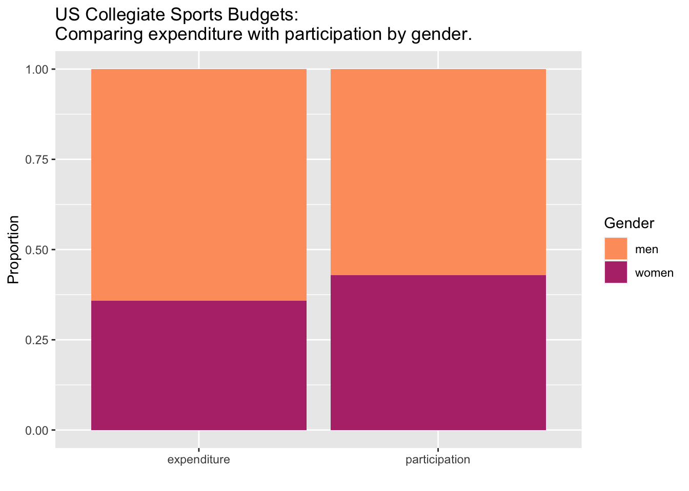

Show the code
library(tidytuesdayR)
library(tidyverse)── Attaching packages ─────────────────────────────────────── tidyverse 1.3.2 ──
✔ ggplot2 3.4.0 ✔ purrr 1.0.1
✔ tibble 3.1.8 ✔ dplyr 1.0.10
✔ tidyr 1.2.1 ✔ stringr 1.5.0
✔ readr 2.1.3 ✔ forcats 0.5.2
── Conflicts ────────────────────────────────────────── tidyverse_conflicts() ──
✖ dplyr::filter() masks stats::filter()
✖ dplyr::lag() masks stats::lag()Show the code
# Read data
tuesdata <- tidytuesdayR::tt_load('2022-03-29')--- Compiling #TidyTuesday Information for 2022-03-29 ----
--- There is 1 file available ---
--- Starting Download ---
Downloading file 1 of 1: `sports.csv`--- Download complete ---Show the code
sports <- tuesdata$sports
# Summary
summary(sports) year unitid institution_name city_txt
Min. :2015 Min. :100654 Length:132327 Length:132327
1st Qu.:2016 1st Qu.:149781 Class :character Class :character
Median :2018 Median :181738 Mode :character Mode :character
Mean :2018 Mean :184360
3rd Qu.:2019 3rd Qu.:214069
Max. :2019 Max. :800001
state_cd zip_text classification_code classification_name
Length:132327 Length:132327 Min. : 1.000 Length:132327
Class :character Class :character 1st Qu.: 4.000 Class :character
Mode :character Mode :character Median : 6.000 Mode :character
Mean : 7.779
3rd Qu.:12.000
Max. :20.000
classification_other ef_male_count ef_female_count ef_total_count
Length:132327 Min. : 0 Min. : 0 Min. : 0
Class :character 1st Qu.: 513 1st Qu.: 652 1st Qu.: 1194
Mode :character Median : 986 Median : 1248 Median : 2259
Mean : 2126 Mean : 2496 Mean : 4622
3rd Qu.: 2385 3rd Qu.: 2860 3rd Qu.: 5237
Max. :35954 Max. :30325 Max. :66279
sector_cd sector_name sportscode partic_men
Min. : 1.00 Length:132327 Min. : 1.00 Min. : 1.00
1st Qu.: 1.00 Class :character 1st Qu.: 7.00 1st Qu.: 13.00
Median : 2.00 Mode :character Median :16.00 Median : 22.00
Mean : 2.21 Mean :16.34 Mean : 30.86
3rd Qu.: 2.00 3rd Qu.:25.00 3rd Qu.: 35.00
Max. :99.00 Max. :38.00 Max. :331.00
NA's :70462
partic_women partic_coed_men partic_coed_women sum_partic_men
Min. : 1.00 Min. : 1.00 Min. : 1.00 Min. : 0.00
1st Qu.: 11.00 1st Qu.: 4.00 1st Qu.: 5.00 1st Qu.: 0.00
Median : 16.00 Median : 8.00 Median :10.00 Median : 0.00
Mean : 20.71 Mean : 11.05 Mean :14.17 Mean : 14.49
3rd Qu.: 23.00 3rd Qu.: 14.00 3rd Qu.:19.00 3rd Qu.: 20.00
Max. :327.00 Max. :130.00 Max. :91.00 Max. :331.00
NA's :63442 NA's :131560 NA's :131560
sum_partic_women rev_men rev_women total_rev_menwomen
Min. : 0.00 Min. : 65 Min. : 0 Min. : 130
1st Qu.: 0.00 1st Qu.: 63428 1st Qu.: 58746 1st Qu.: 96299
Median : 6.00 Median : 158126 Median : 138318 Median : 228776
Mean : 10.86 Mean : 809011 Mean : 279346 Mean : 795231
3rd Qu.: 17.00 3rd Qu.: 400604 3rd Qu.: 331120 3rd Qu.: 541876
Max. :327.00 Max. :156147208 Max. :21440365 Max. :156147208
NA's :70462 NA's :63444 NA's :45193
exp_men exp_women total_exp_menwomen sports
Min. : 65 Min. : 65 Min. : 130 Length:132327
1st Qu.: 63062 1st Qu.: 59301 1st Qu.: 96436 Class :character
Median : 159666 Median : 141800 Median : 234559 Mode :character
Mean : 662386 Mean : 331594 Mean : 732422
3rd Qu.: 424025 3rd Qu.: 361860 3rd Qu.: 585604
Max. :69718059 Max. :9485162 Max. :69718059
NA's :70462 NA's :63442 NA's :45191 Show the code
# Aggregate relevant data
relevant <- sports %>% summarize(total_exp_women = sum(exp_women, na.rm = TRUE),
total_exp_men = sum(exp_men, na.rm = TRUE),
total_part_women = sum(sum_partic_women, na.rm = TRUE),
total_part_men = sum(sum_partic_men, na.rm = TRUE))
# Compute proportions
props <- relevant %>% transmute(exp_women = total_exp_women / (total_exp_women + total_exp_men),
exp_men = total_exp_men / (total_exp_women + total_exp_men),
part_women = total_part_women / (total_part_women + total_part_men),
part_men = total_part_men / (total_part_women + total_part_men))
# Arrange data, not particularly elegantly.
particiaption <- props[c(3,4)] %>% rename(women = part_women, men = part_men) %>% pivot_longer(c(1,2), names_to = 'gender', values_to = 'participation')
expenditure <- props[c(1,2)] %>% rename(women = exp_women, men = exp_men) %>% pivot_longer(c(1,2), names_to = 'gender', values_to = 'expenditure')
props <- particiaption %>% inner_join(expenditure, by = c('gender'))%>% pivot_longer(cols =-1)
# Plot data.
props %>% ggplot(aes(x = as.factor(name), fill = as.factor(gender), y = value ))+
geom_bar(stat = "identity")+xlab("")+ylab("Proportion")+
labs(fill = 'Gender')+ scale_fill_viridis_d(option = "A",begin = 0.8, end = 0.5)+
ggtitle("US Collegiate Sports Budgets:\nComparing expenditure with participation by gender.")